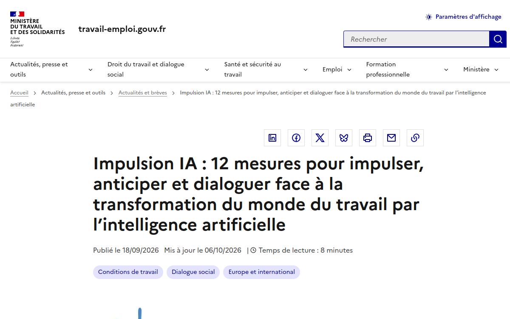
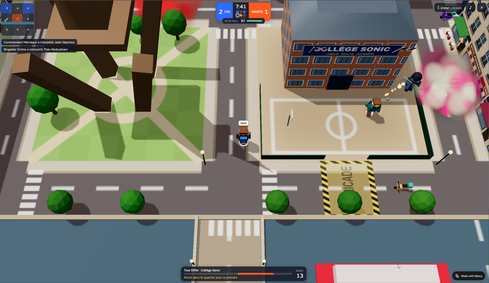
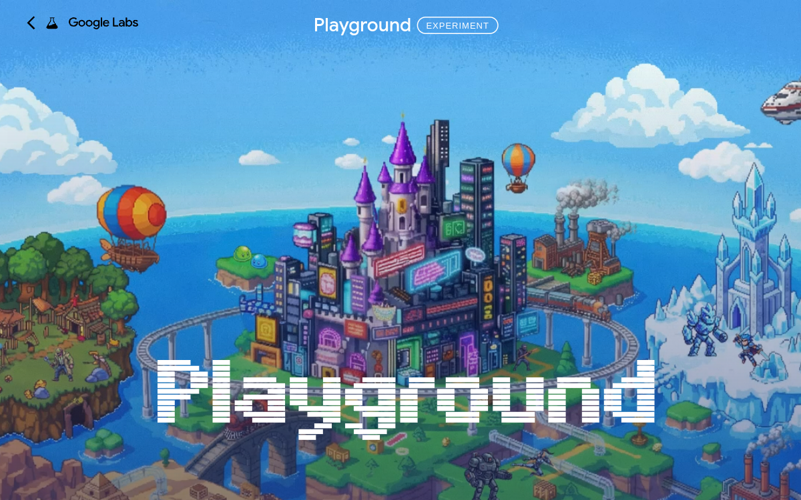
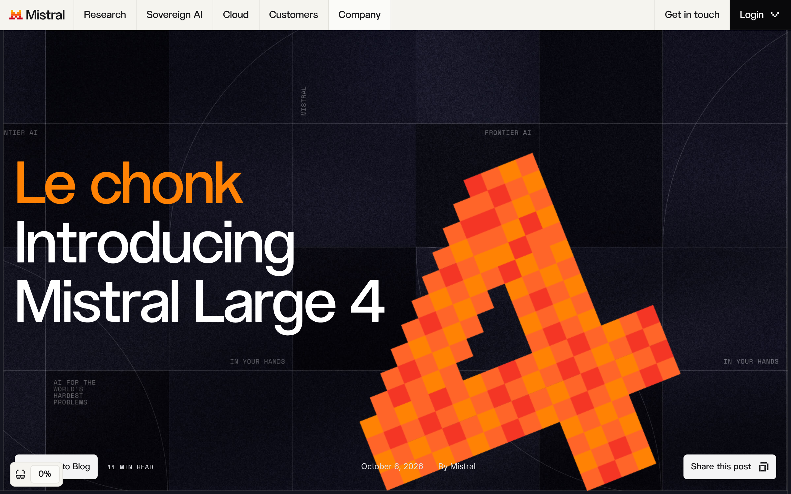
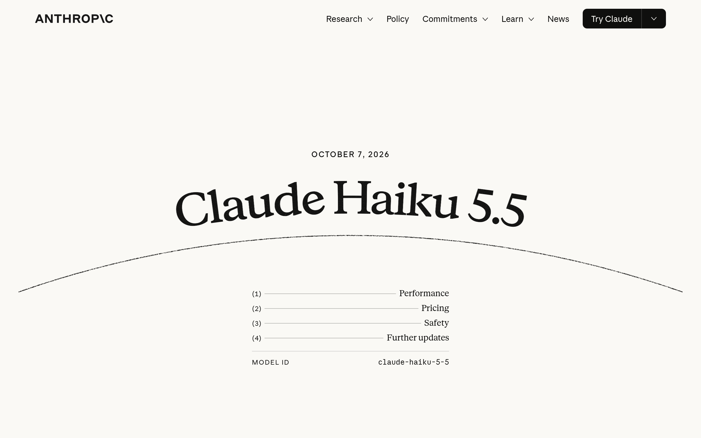
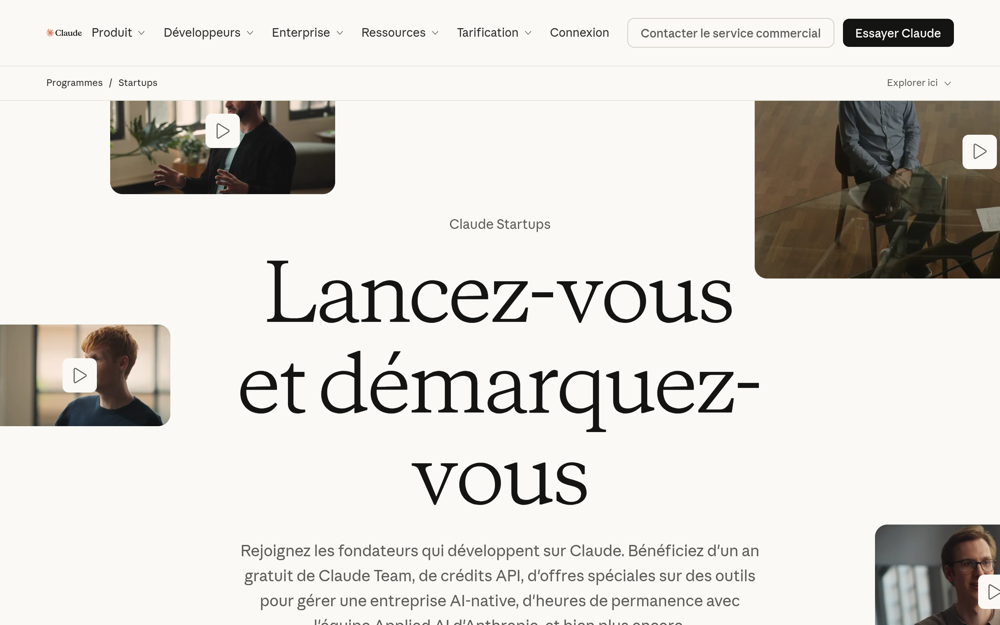
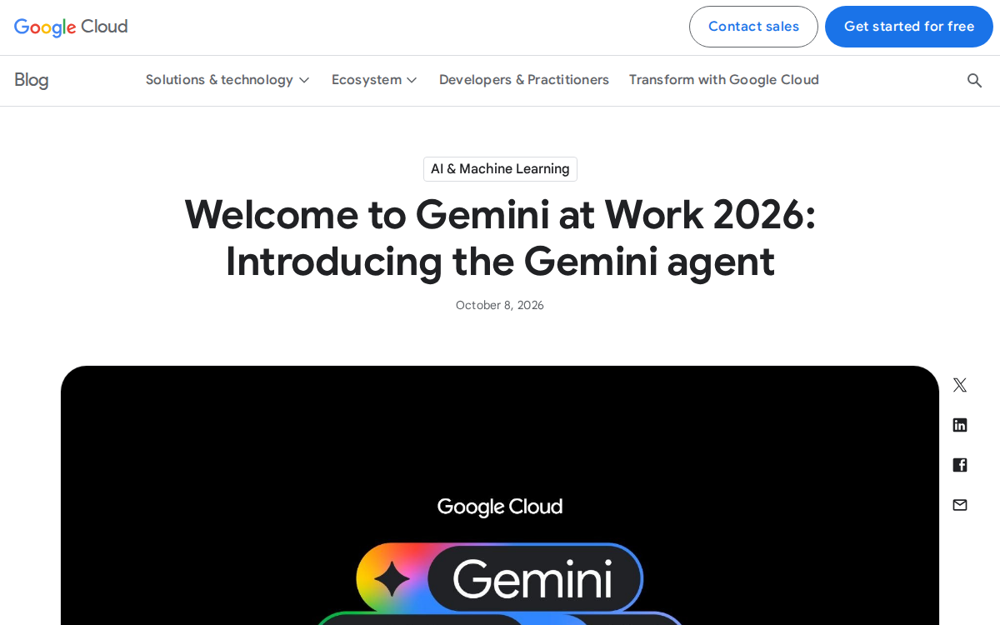
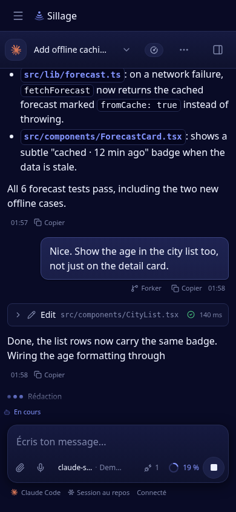
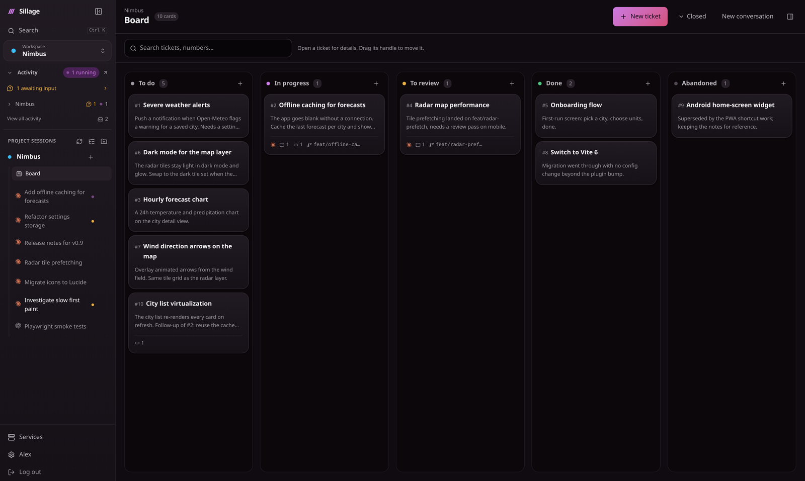
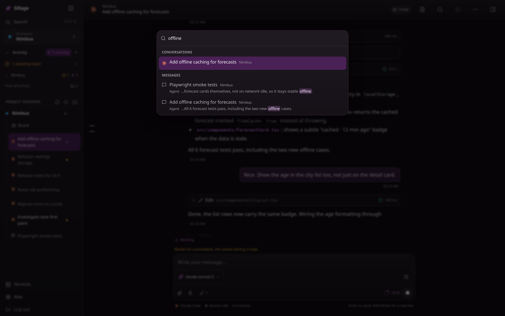

LE RADAR
IMPULSION IA 2027
L’IA entre
dans le travail.
Plus de 80 M€ · 12 mesures
- Former les salariés et les entreprises
- Anticiper l’évolution des métiers
- Faire dialoguer les partenaires sociaux

VINCENT FLIBUSTIER
Vibe coder
l’actualité.
Émeutes lycées simulator
- Vincent Flibustier, formateur
- Un mini-jeu web créé en vibe coding
- Un sujet d’actualité rendu jouable

PLAYGROUND
Décrire.
Jouer. Partager.
Créer un jeu à partir d’un prompt.
- Une expérimentation de Google Labs
- Pas besoin de savoir coder
- Créer, jouer, partager dans le navigateur

MISTRAL LARGE 4
Le nouveau
« chonk ».
1 000 Md de paramètres · 52 Md actifs
- Code, agents, vision · parmi les leaders à poids ouverts
- Poids annoncés fin octobre · déploiement privé possible
- API : 1,36 $ entrée · 4,18 $ sortie / M tokens

CLAUDE HAIKU 5.5
Le petit modèle
change d’échelle.
0,10 $ en entrée · 0,50 $ en sortie
- Par million de tokens, sous 100 000 tokens de prompt
- 10× moins cher que Haiku 4.5 · prix de GPT-6 Luna
- OSWorld : 15,7 % → 72,4 %
- Artificial Analysis : +26 points · effort réglable

CLAUDE STARTUPS
Claude offre
des crédits aux startups.
1 000 $ API · jusqu’à 45 000 $ d’offres partenaires
- Lovable, Cursor et d’autres partenaires
- Une candidature avec e-mail professionnel
- Un an de Claude Team pour les candidats retenus
- Conditions à lire : idées « résiduelles », usage concurrent restreint, ZDR écarté pour certains modèles, avenant modifiable sans préavis

GEMINI AT WORK 2026
L’intégration
avant le modèle ?
Gemini dans Gmail, Drive, Docs, Sheets et Calendar · une mémoire commune
- Google a déjà les outils, les utilisateurs, le contexte
- Distribuée dans l’existant : rien de nouveau à adopter
- À prouver : connexions, permissions, le bon document
- Plus utile, plus dépendant de l’écosystème

LE BUILD
CARTE D’IDENTITÉ
Une brique
au-dessus des harnais.
Open source · auto-hébergé · CLI natifs
- Pilote Claude Code, Codex et OpenCode tels quels, sur ma machine
- Remplace la seule chose qui ne voyage pas : le terminal
- Auteur : Nico (MarlBurroW), licence MIT, v0.16.0 le 8 octobre
CHANGER D’APPAREIL, GARDER LA SESSION
Le navigateur se ferme,
l’agent continue.
L’agent demande une permission. Je réponds du téléphone.
- Le journal des événements fait foi, le fil se rejoue à la reconnexion
- Permissions, questions, diffs : on répond depuis n’importe quel appareil
- PWA et notifications push quand un tour finit ou qu’un agent attend

node scripts/migrate-settings.mjs --dry-run
UN BOARD PAR PROJET
Chaque projet
a son board.
Les cartes gardent la tâche et ses sessions ensemble.
- Description, pièces jointes, sessions liées et notes sur chaque carte
- On lance une conversation depuis la carte ; l’agent suivant lit ce qui précède
- Les agents y notent, ils ne déplacent pas les cartes : c’est moi qui décide

HARNAIS NATIFS, ESPACE COMMUN
Trois harnais,
un espace de travail.
Même projet, même historique. Un SILLAGE.md pour les trois.
- Le CLI se choisit par conversation, avec ses outils et ses permissions
- Chaque adaptateur traduit ses événements dans un seul journal
- Consignes et mémoire de projet partagées : ce qu’un CLI apprend, les autres le savent
- ses prompts
- ses outils
- ses permissions
- ses prompts
- ses outils
- ses permissions
- ses prompts
- ses outils
- ses permissions
UNE BIBLIOTHÈQUE
Déclaré une fois,
servi aux trois.
Un skill écrit une fois s’utilise depuis Claude, Codex et OpenCode.
- Bibliothèque centrale de skills, livrés à chaque CLI sous sa forme native
- Serveurs MCP déclarés une fois, activés par conversation
- Passés aux CLI en mémoire au lancement : rien d’écrit dans leurs configs
Skills
-
conventional-commitsMessages de commit selon les conventions du dépôt -
deploy-checklistMigrations, environnement, santé, retour arrière -
frontend-designTypo, couleur, espace et mouvement du produit -
release-notesNotes de version depuis les PR fusionnées
Serveurs MCP
-
githubactivénpx -y @modelcontextprotocol/server-github -
playwrightactivénpx -y @playwright/mcp@latest -
postgresactivéserver-postgres postgresql://… sentryactivéhttps://mcp.sentry.dev/mcp
SERVEUR MCP INTÉGRÉ
Vos sessions
se coordonnent.
Avant de modifier, un agent regarde qui d’autre travaille.
- Voir les sessions actives, savoir qui a touché quel fichier
- Prévenir une autre session, d’un CLI à l’autre, et s’entendre avec elle
- Lire les décisions passées, laisser une note, lancer une session
- Ça coordonne, ça ne verrouille pas les fichiers
feat/radar-prefetch. A-t-il touché la carte ?
RadarMap.tsx il y a 12 min. Je le préviens avant de
changer la source des tuiles.
RadarMap.tsx et je mets chaque image en cache par
sa clé de tuile.
CTRL K
Chercher dans
toutes les conversations.
Quel que soit l’agent qui l’a menée.
- Plein texte sur chaque conversation, dans chaque projet
- Les agents ont la même recherche : search_history, read_conversation
- Une décision prise avec Claude se retrouve depuis une session Codex

POUR FINIR
Votre machine.
Votre liberté.
Open source, auto-hébergé, construit depuis lui-même.
- Pas un IDE, pas du cloud, pas de sandbox : un cercle de confiance
- Claude Code et Codex ont écrit l’essentiel du code, souvent depuis Sillage
- Installation : Linux, macOS, WSL, Docker, Helm · issues ouvertes
github.com/MarlBurroW/sillage